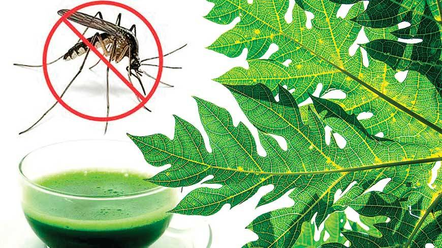
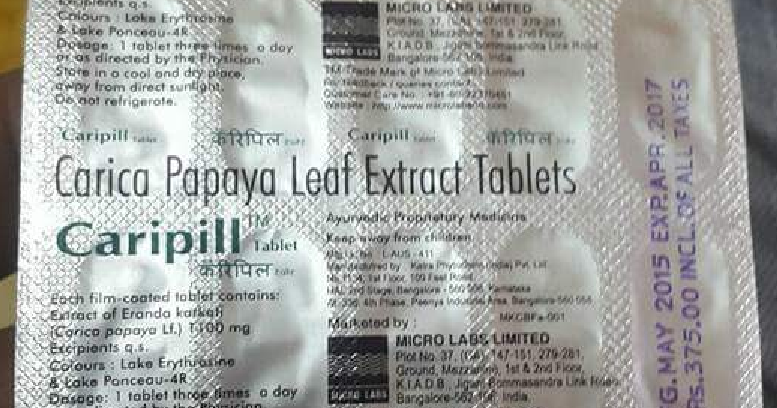
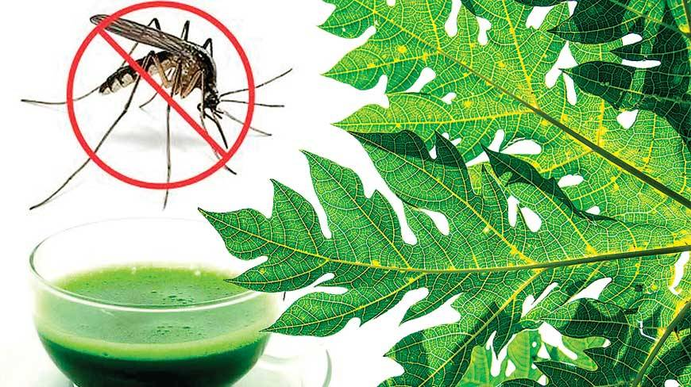
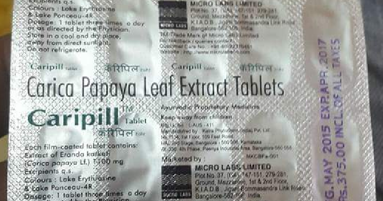

Home > Others

The Platelets are the smallest circulating cells in our blood (also called “thrombocytes”). Their shape may vary but generally are oval or round in shape. Their slightly reddish color is due to the presence of hemoglobin in the blood.
The platelets are formed by very large bone marrow cells present in blood which is termed as “megakaryocytes”. They undergo a process of fragmentation which releases around 1,000 platelets per megakaryocytes.
Platelets are responsible for the clotting purpose of blood. See !! What happens is, whenever we get a cut or bruises, then that damaged blood vessel part sends the signal to the Platelets. Then, the Platelets binds to that place to form a long tentacle shape which resembles a spider in shape. This is clotting of blood. And, clotting is necessary to avoid the loss of blood through that damaged vessel. You may imagine the case when there is no clotting functionality in your blood. I know you can’t even imagine that !!
Normally, the Platelets count can be between 1,50,000 and 4,50,000 per microliter of blood.
Having large number of platelet count (more than 4,50,000) is a case of “thrombocytosis” and having less than 1,50,000 platelet count is a case of “thrombocytopenia”. Having more platelet counts may result into heart strokes. So, routine checkup must be done.
Many times platelet count drops whenever something in your body is preventing the production of platelets. The causes may be:
When you can increase your platelet counts just by some home remedies, then why going for the heavy medication??
Here are some of the sure shot food items which will boom your platelet count in very short period of time:

Just take some Papaya leaves. Put it in your juicer with some amount of water and heat it up to get its extract in the form of liquid. Consume around 50-100 ml at least twice a day. It's the first prioritized medicine by any experienced doctor.

Consuming fresh milk of Goat is the best intake you can get to boom your platelet count. Very few know about that. Just one cup of goat’s milk can fulfill 20% of our daily nutrient needs. Not just Platelets count, it is awesome for the whole body nutrient needs. If you are able to arrange this nutrient booster, then its the best remedy to increase the platelet count and to get rid of thombocytopenia. Even if you are only taking this goat's milk and not going for any other medication, this can definitely improve your platelet counts.

Kiwi fruit is rich in Vitamin C, Vitamin E and polyphenols which is beneficial in cardiovascular diseases. And recent studies and experiments have found this fruit to be very beneficial in increasing the number of platelets in the blood. Taking two to three kiwi’s per day can increase the platelet aggregation and will be fruitful in case of thrombocytopenia.

Most of the times, people living in towns or cities can't manage to get the papaya leaves or goat's milk. As, we all know that in cities continuously deforestation is taking place in order to build houses and setting up industries to fulfil the increasing demands of the ever increasing population. So, due to this finding a papaya tree is somewhat difficult. So, to compensate the needs of papaya leaves extract, 'Caripill' can be taken as per the physicians directions.
It's a pure ayurvedic proprietary medicine (tablet form) which contains the papaya leave extracts and is quite beneficial to get rid of thombocytopenia. It's a slight brownish colored tablet whose cost per 15 tablets is around Rs 410/- in Indian currency. So, don't get confused while getting it from the chemist shops or any medicinal stores.
Doses : In my rough days, I was suggested to have one of its tablets twice a day. But, its better to be updated by a physician and consume accordingly.

Here's another fruit 'Pomegranate' which is more often suggested to increase the platelet counts. It's color indicates the presence of high iron content in it. This fruit even helps your body maintain a good energy level at the stages of low platelet counts.
Note: You can consume all of the above along with your regular diet.
Posted by : Ankit Kumar
Platelets and ways to Increase Platelets count by Home remedies
What actually are Platelets
The Platelets are the smallest circulating cells in our blood (also called “thrombocytes”). Their shape may vary but generally are oval or round in shape. Their slightly reddish color is due to the presence of hemoglobin in the blood.
The platelets are formed by very large bone marrow cells present in blood which is termed as “megakaryocytes”. They undergo a process of fragmentation which releases around 1,000 platelets per megakaryocytes.
Function of Platelets
Platelets are responsible for the clotting purpose of blood. See !! What happens is, whenever we get a cut or bruises, then that damaged blood vessel part sends the signal to the Platelets. Then, the Platelets binds to that place to form a long tentacle shape which resembles a spider in shape. This is clotting of blood. And, clotting is necessary to avoid the loss of blood through that damaged vessel. You may imagine the case when there is no clotting functionality in your blood. I know you can’t even imagine that !!
What must be the Platelets count in a normal body ??
Normally, the Platelets count can be between 1,50,000 and 4,50,000 per microliter of blood.
Having large number of platelet count (more than 4,50,000) is a case of “thrombocytosis” and having less than 1,50,000 platelet count is a case of “thrombocytopenia”. Having more platelet counts may result into heart strokes. So, routine checkup must be done.
Many times platelet count drops whenever something in your body is preventing the production of platelets. The causes may be:
- Presence of external viruses in your body
- Medication
- Consumption of excessive alcohol
- There may be other reasons too
How to increase Platelet counts in very less period of time
When you can increase your platelet counts just by some home remedies, then why going for the heavy medication??
Here are some of the sure shot food items which will boom your platelet count in very short period of time:
Extract of Papaya leaves

Just take some Papaya leaves. Put it in your juicer with some amount of water and heat it up to get its extract in the form of liquid. Consume around 50-100 ml at least twice a day. It's the first prioritized medicine by any experienced doctor.
Goat Milk
Consuming fresh milk of Goat is the best intake you can get to boom your platelet count. Very few know about that. Just one cup of goat’s milk can fulfill 20% of our daily nutrient needs. Not just Platelets count, it is awesome for the whole body nutrient needs. If you are able to arrange this nutrient booster, then its the best remedy to increase the platelet count and to get rid of thombocytopenia. Even if you are only taking this goat's milk and not going for any other medication, this can definitely improve your platelet counts.
Kiwi fruit
Kiwi fruit is rich in Vitamin C, Vitamin E and polyphenols which is beneficial in cardiovascular diseases. And recent studies and experiments have found this fruit to be very beneficial in increasing the number of platelets in the blood. Taking two to three kiwi’s per day can increase the platelet aggregation and will be fruitful in case of thrombocytopenia.
Caripill Tablets

Most of the times, people living in towns or cities can't manage to get the papaya leaves or goat's milk. As, we all know that in cities continuously deforestation is taking place in order to build houses and setting up industries to fulfil the increasing demands of the ever increasing population. So, due to this finding a papaya tree is somewhat difficult. So, to compensate the needs of papaya leaves extract, 'Caripill' can be taken as per the physicians directions.
It's a pure ayurvedic proprietary medicine (tablet form) which contains the papaya leave extracts and is quite beneficial to get rid of thombocytopenia. It's a slight brownish colored tablet whose cost per 15 tablets is around Rs 410/- in Indian currency. So, don't get confused while getting it from the chemist shops or any medicinal stores.
Doses : In my rough days, I was suggested to have one of its tablets twice a day. But, its better to be updated by a physician and consume accordingly.
Pomegranate
Here's another fruit 'Pomegranate' which is more often suggested to increase the platelet counts. It's color indicates the presence of high iron content in it. This fruit even helps your body maintain a good energy level at the stages of low platelet counts.
Note: You can consume all of the above along with your regular diet.
Posted by : Ankit Kumar